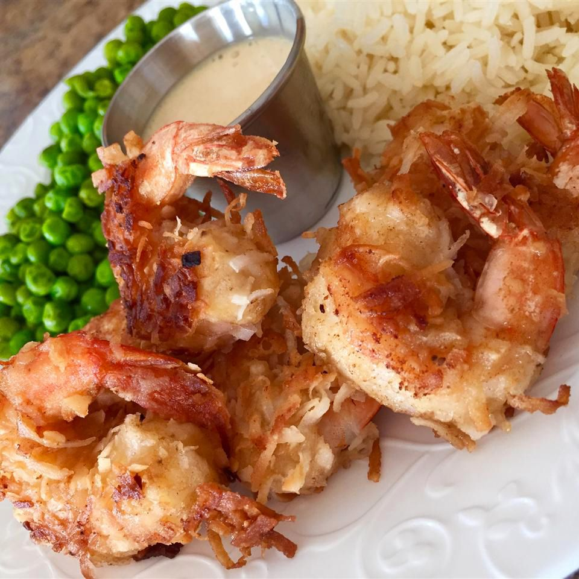

Home
Coconut Shrimp

Description
Prep time: 15 mins
Cook time: 10 mins
Additional time: 30 mins
Total time: 55 mins
Servings: 6
Yield: 24 coconut shrimp
Ingredients
- All-purpose flour
- 1 egg
- Beer
- Baking powder
- Peeled shrimp
- Unsweetened coconut flakesa
- Cooking oil
Directions
- Whisk some of the flour, the egg, beer and baking powder together.
- Dredge the shrimp in flour, dip it in the beer batter, and roll in the coconut flakes.
- Refrigerate the shrimp for half an hour, then fry the shrimp in hot oil until golden brown.